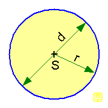

Zají mavosti o kruhu a jeho specifikace
Kruh je rovinný geometrický útvar, omezený kružnicí. Kruh je určen svým středem S a poloměrem r: Je to množina všech bodů roviny, které mají od středu vzdálenost menší nebo rovnou poloměru.Pro poloměr¨
π = 3,14 (přibližně), Ludolfovo číslo Pí, tj. matematická konstanta
S ... střed kruhu
r ... poloměr, tj. polovina průměru
d ... průměr, tj. dva poloměry
O ... obvod kruhu, tj. délka kružnice
P ... plocha kruhu, nesprávně nazývaná jako obsah kruhu

Zdroj obrázku:http://www.wikina.cz/a/Soubor:Wikina-kruh.gif
Zpět